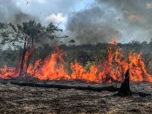

A natureza é algo a ser preservada
As florestas estão morrendo, varios animais estão entrando em extinção

.
.
Vemos muito nos noticiarios que a fauna e flora anda sendo destruida, com animais sendo extintos florestas pegando fogo os lagos sendo poluidos e etc. Existem diversas maneiras de ajudar a impedir que a situação piore ou até mesmo melhoralá, mas são poucas pessoas que de fato fazem algo sobre. Coisas que poderiam ser feitas para resolver um pouco do problema seriam:
1. Não jogar lixo no chão.
2. Diminuir o consumo de carne
3. Não jogar lixo em rios ou mares
4. Não jogar fogo nas florestas
Fazendo ao menos uma dessas coisas já é o suficiente.
.